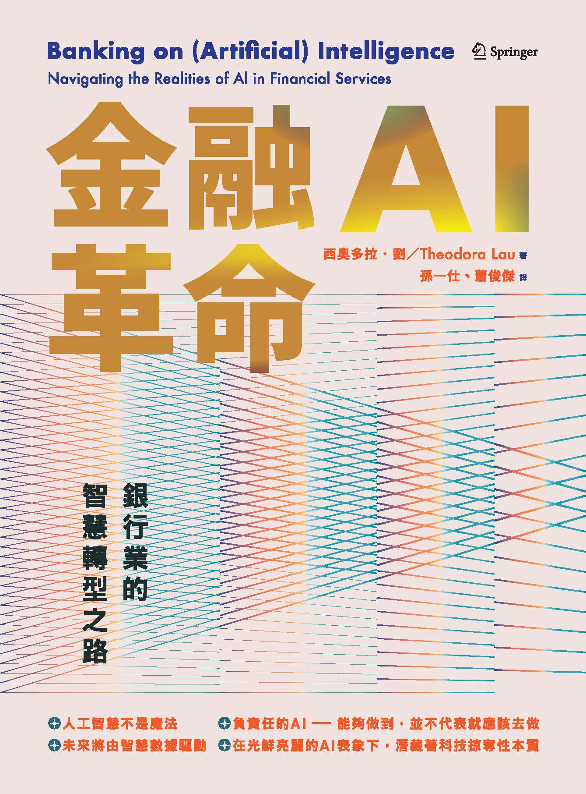

01
資產負債表的 AI 化
未來 5 年，銀行的每一個資產負債表科目都會被 AI 觸及：存款（反洗錢）、放款（信用評分）、投資（投顧）、手續費（客服）、資本（風險模型）。沒有任一業務能豁免。

Theodora Lau 是華裔美籍金融科技評論家、Unconventional Ventures 創辦人，連續三年入選《American Banker》全球金融科技最具影響力女性 Top 20。
本書是 Theodora Lau 2025 年 2 月在 Palgrave Macmillan 出版的第三本專書，繁體中文譯名《金融AI革命》。在 ChatGPT、Claude、Gemini 大規模進入金融場景、歐盟 AI Act 全面生效的 2025 年，作者以獨立研究者與投資人的視角，同時談 AI「該做什麼」與「不該做什麼」。
全書圍繞 機會、風險、治理、人本 四條主軸，對應到銀行 COO、Chief Data Officer、Compliance Head 的日常決策。對台灣金融從業者而言，這不是純粹的概念書，而是一本可以直接落地的決策工具書。
作者非 AI 技術供應商，亦非大型銀行經理人，避開了「賣方語言」與「巨頭語言」的雙重盲點。
涵蓋生成式 AI 進入金融場景後的第一輪落地經驗，同步收錄歐盟 AI Act、美國 NIST AI RMF、新加坡 MAS Veritas 三大監管框架。
結構圍繞「機會、風險、治理、人本」，對應 COO / CDO / Compliance Head 的日常決策，可直接轉化為可操作清單。
未來 5 年，銀行的每一個資產負債表科目都會被 AI 觸及：存款（反洗錢）、放款（信用評分）、投資（投顧）、手續費（客服）、資本（風險模型）。沒有任一業務能豁免。
金融業的核心不是「資金中介」而是「信任中介」。AI 能把流程做得更快更便宜，但若做壞信任（幻覺、歧視、資料外洩），銀行的 100 年品牌會在 100 天內崩塌。
歐盟 AI Act、美國各州、台灣金管會的 AI 指引正在快速成形。第一批把「合規 AI」做成系統性能力的銀行，將拿走最大一塊 AI 紅利。
作者綜合 NIST AI RMF、歐盟 AI Act、新加坡 MAS Veritas 三大框架，萃取出金融業必須背下來的 7 個字母。
點擊圓點，看每個支柱的內涵。
每一個 AI 決策都要能追溯到一個「人」或「團隊」。沒有「電腦這樣判」的開脫條款，所有自動化決策必須有指定的責任歸屬。
不是把演算法公開，而是向監理、客戶、員工講得清楚「為什麼」。透明度是溝通能力，不是技術參數。
對拒絕放款、費率調整這類高風險決策，必須提供「若…則不同」的反事實解釋。「分數不夠」不是解釋，「若你的負債比再低 5%，就會通過」才是。
模型不得因性別、族裔、地域產生歧視性差別待遇；需定期做偏差審計。多元若沒有可量測的指標，只是修辭。
聯邦式學習（Federated Learning）、差分隱私（Differential Privacy）不再是學術名詞，而是銀行導入 AI 的底層建設。原始客戶資料不出庫、模型在加密下訓練是新常態。
AI 帶來新的攻擊面 — 提示注入（prompt injection）、模型投毒（model poisoning）、越獄攻擊（jailbreak） — 必須納入既有的資安治理體系，不能視為「另一個 IT 議題」。
所有「影響客戶權益」的 AI 決策必須保留人類最終核准。AI 可以建議、可以排序、可以草擬，但「按下確定鍵」的，永遠是人。
作者依資金流向與用戶摩擦點，歸納出六大場景。點擊上方標籤切換，看每個場景的代表案例與成熟度。
把人留給異常 — 當銀行能把 L1 作業自動化到 90%，L1 作業員會升級成「模型訓練師」與「例外處理專家」，薪資帶向上移動而非下移。
訓練資料反映的是「過去誰被服務、誰被拒絕」，而非「未來誰應該被服務」。
WEF 統計：全球 AI 從業人員中女性僅佔約 22%，少數族裔比例更低。設計者本身的同質性會直接寫進產品。
一個在加州訓練好的詐欺偵測模型，搬到東南亞可能把所有跨境匯款誤判成洗錢。
We are not 'banking the unbanked' — we are reverse-engineering banking for them.
截至訪談時，Stori 已服務超過 200 萬戶、發出數十億美元信貸，違約率反而低於業界水準 — 因為他們用替代資料（手機、社群、消費）重建信用模型，而非套用美國模型。
同一個「最佳資產配置」，給金融素養 90 分與 30 分的客戶看，後者會看不懂、不執行、最後對 AI 失去信任。
她提出三層 AI 投顧設計：
19 世紀蒸汽機、20 世紀電腦、現在 AI 又一次重塑勞動市場。三組必須直視的數據：
把原本 12-18 個月的「跟班學習」濃縮為 6-9 個月的「AI 模擬訓練 + 實戰」。核心是用 AI 模擬器讓新人在零客戶風險下完成 1,000 次完整對話，再進入真實業務。
AI 客服上線 1 個月，相當於 700 名客服全職工作量、客戶滿意度與人類客服打平、平均處理時間從 11 分鐘降到 2 分鐘。關鍵在於：Klarna 沒有大規模裁員，而是把這 700 個職位轉去做更高階的「客戶健康諮詢」。
與 New York Jobs CEO Council、CUNY 合作，目標 2 年內訓練 200 萬美國人 AI 基礎技能；其中紐約市子計畫已讓 5 萬名低收入族群完成培訓。
點擊每章查看完整摘要。每一章都對應銀行業實際決策場景。
第 1 章先拆解三個常見誤解：
作者依據資金流向與用戶摩擦點，歸納出六大場景（已在上方「六大應用場景」區塊用 tab 互動展開）。
對多數區域型銀行而言，最值得投入的不是最酷的，而是「資料品質最高 × 風險成本最低」的交集 — 也就是反詐欺與中後台自動化。
作者綜合 NIST AI RMF、歐盟 AI Act、新加坡 MAS Veritas 三大框架，萃取出七大支柱（已在上方「七大支柱」互動環展開）。
這七個字母 ATEFPSH 應該成為所有金融機構 AI 治理委員會的標準檢核表。每一個 AI 用例上線前，七個檢核項都要簽過字。
第 4 章作者拆解大型銀行（JPMorgan、HSBC、星展）AI 治理組織的實際架構，並指出三個常見錯誤：
正確做法是把 AI 治理做成「季度循環」：每季由總經理層級主持、檢視所有用例、按 ATEFPSH 七支柱打分。
三種模式對應金融業不同業務的風險－效率取捨。
對台灣銀行業特別有啟發的一點：Mode 2 不是取代人，而是「把人留給異常」。當一家銀行能把 L1 作業自動化到 90%，L1 作業員反而升級成「模型訓練師」與「例外處理專家」，薪資帶向上移動而非下移。
第 6 章是全書最動人、也最尖銳的一章。詳細內容已在上方第 6 章專讀中展開（資料／設計／部署三層偏見、Stori 與 Quantmate 兩段焦點訪談）。
作者最重要的提醒：有偏見的 AI = 有缺陷的產品 = 有違規風險 = 有商譽風險。把多元當成「軟性議題」是 30 年前的想法，2026 年它已經是直接寫進法規與合約裡的硬指標。
終章作者沒有賣弄科幻預測，而是務實地指出 2030 年銀行家的新樣貌：
三條警告：女性與少數族裔受衝擊比例顯著高於白人男性；中階白領（年薪 5-10 萬美元）受衝擊最大；再培訓的窗口只有 3-5 年。
將書中觀點轉為可執行清單。對中型銀行、區域銀行、財管團隊都適用。
成員應涵蓋法遵、風控、資訊、業務、HR 五大單位，而非只由資訊部主導。參考本書 ATEFPSH 七大支柱設計議程，每季檢視所有 AI 用例。
首選：客服語音轉文字 + 對話分析；次選：分行 KPI 儀表板生成式摘要；三選：授信書面審查的初稿草擬（保留人類最終核准）。避開高爭議用例。
2026-2027 年優先整合核心系統、App、分行、CTI 四大資料源，建立統一 Customer Data Platform。這是所有未來 AI 用例的地基。
理專、授信、法遵、分行主管全員必修「AI 原理與風險 8 小時課程」。讀書會可以當第一炮。三條再培訓路徑（理專 → 財務健康教練、客服 → 體驗設計師、授信 → 模型監督員）今年底前完成全員盤點。
不追求用最多家廠商，而是找 2 家（1 家國際大廠 + 1 家在地廠）深度合作，把資料治理、模型調校、合規機制建構起來。作者明確指出：金融 AI 不是一次性採購，是長期共營關係。同時參考 Google AI Opportunity Fund 模式，與大學/職訓局合作建立「在地 AI 培訓基地」。